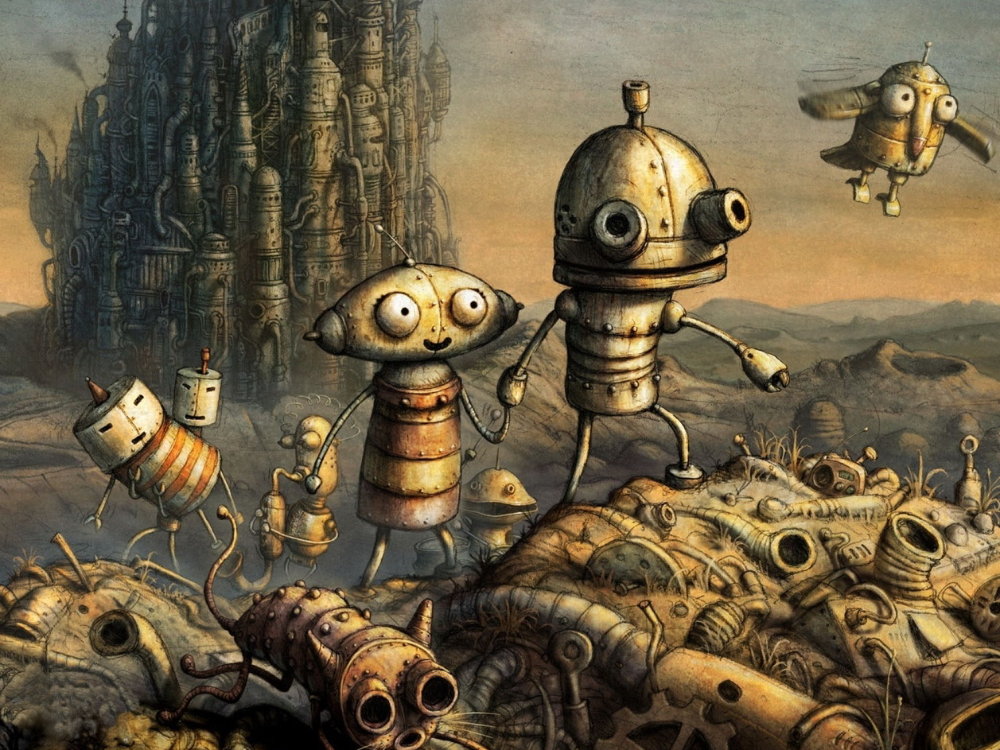
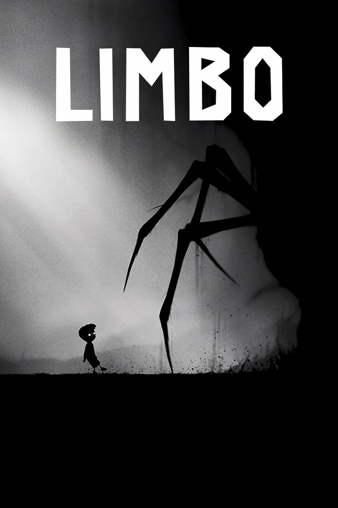

Место действия: Машинариум – город роботов, где абсолютно всё (здания, окружение, прочие мелкие предметы) сделано из металла. Начинается история с того, что главный герой игры — робот Йозеф оказывается разобранным и выброшенным на свалку за пределы города. Сумев собрать себя и попав в город, герой начинает распутывать клубок загадок и по кусочкам восстанавливать картину произошедшего, по пути встречая ярких интересных персонажей. Цель героя одна – это, преодолев все трудности, отыскать свою любимую девушку.

Limbo - это монохромный двухмерный платформер про мальчика, который отправляется в таинственный мир на поиски своей пропавшей сестры. На пути к своей цели герою предстоит столкнуться с мрачными существами, таинственными людьми и огромным количеством иных опасностей. Игроку предстоит проложить свой путь по мрачному миру, постоянно погибая и возвращаясь к жизни снова.